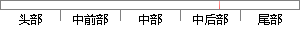

经过傅里叶变换 从空域 转换到频域，
片段位置图

相似结果
相似片段：
够求 得它们的起伏δ＾犡犻与δ＾犢犻（犻＝１，２，３，４）的表达式，然后将它们代入（５）式就可以得到关于δ＾犡犻和δ＾犢犻 的运动方程，并经过傅里叶变换转换到频域内，即 烄δ＾犡１烌 ｉｎ 烄δ＾犡１烌 烄δ＾犢１烌 ｉｎ 烄δ＾犢１烌 式中 犕狓＝ 犕狔＝ 犕狓 δ＾犡２ δ＾犡３ 烆δ＾犡 ４烎 ｉｎ δ＾犡２ ＝
| 对比库： | 已发表资源库 |
| 来源： | "Three-Color and Tripartite Entangled State from Cascaded Type I Second-Harmonic Generations", Acta Optica Sinica, 2014. 查看来源 |
| 相似率 | 84.62% （严重抄袭） |